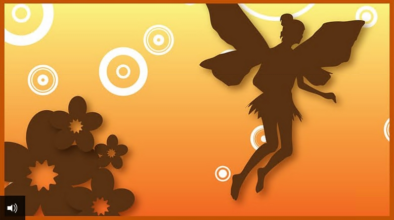

Jeff Wei分享站点
Jeff Wei分享站点THUMBELINA

BBC-Thumbelina
Audio Transcript
Once there was a woman who longed for a child of her own. So she went to a witch to ask for help. ‘Old witch,’ she said. ‘I would dearly like to have a child of my own. Can you help me?’
‘Ah, that’s easy,’ said the witch. ‘Here’s a barleycorn for you. Take it home and plant it in a pot. Then wait and see what happens.’‘Oh thank you,’ said the woman. She hurried home and planted the grain in a pot. At once a flower began to grow.
‘What a pretty flower,’ exclaimed the woman and she bent down to kiss the petals. As she did, the petals burst open.There, sitting in the middle of the flower, was a little girl. ‘How tiny and delicate she is,’ said the woman. ‘Why, she is no bigger than the tip of my thumb. I will call her Thumbelina.’
Thumbelina was very contented. At night she slept under a rose petal in a polished walnut shell. By day she rowed herself across a bowl of water the woman had put out for her.
As she rowed she sang. She had the sweetest voice you’ve ever heard. One night, while Thumbelina was asleep, a toad hopped through the window. ‘Now there be a handsome wife for my son,’ the big wet toad croaked, thumping down onto the table where Thumbelina lay.
She picked up the walnut shell and hopped with it back to her home in the mud by the edge of a stream.
But ‘Croak croak, brek-kek-kex,’ was all the toad’s son said when he saw Thumbelina. ‘Shhh! Don’t speak so loudly. You might wake her,’ his mother said. ‘We must put her somewhere where she cannot escape. I know,’ she said, when she had thought for a time. ‘I’ll put her on a water lily out in the stream.’
So Toad swam out to the centre of the stream and set the walnut shell down on the leaf of the biggest water lily. When Thumbelina woke and saw where she was, she began to cry. All she could see around her was water. ‘How will I ever get back to land,’ she said sadly.
Back on the bank the toad was very busy, carrying rushes and yellow water flowers from the stream to decorate the room where her son and his bride would live. ‘How happy my son and his new bride will be,’ she thought.
Then the toads swam out to the leaf in the stream where Thumbelina was perched. The old toad made a deep bow to Thumbelina. ‘This is my son,’ she said. ‘You are to marry him and live with him in our fine house under the mud.’
‘Croak croak. Brek-kek-kex,’ was all that her son could say. After the toads had swum away Thumbelina sat and cried on the leaf. ‘I do not want to marry a big ugly toad and live in a house with him under the mud,’ she said.
Below the lily the fishes heard her and popped up their heads to look at her. ‘What a pretty little girl,’ they said to each other. ‘We cannot let her marry an ugly creature like that.’ So they swam up to the stalk that held the leaf and gnawed away at it until at last the lily floated free.
Down the stream the lily glided. Thumbelina was happy. ‘The toads will never catch me now,’ she thought. The sun shone brightly and the water glittered like gold. She did not see the beetle fl y overhead. Then all of a sudden she felt a pair of claws grip her around the waist and lift her off the lily leaf. Up the beetle fl ew into a tree, Thumbelina still clasped tightly in its claws.
Thumbelina was very frightened but there was nothing she could do. The beetle put her down on a large leaf. ‘You are very pretty,’ it said. The other beetles who lived in the tree came to look at her. ‘Why, she has only got two legs,’ scoffed one. ‘And she hasn’t got any feelers,’ snorted another, waving his about proudly. ‘And look how thin her waist is. Ugh! She is not pretty – not pretty at all,’ they said. The beetle who found her decided that they were right and so Thumbelina was put back down on the ground.
All summer Thumbelina lived alone in the forest. She wove herself a bed out of blades of grass and hung it like a hammock under a dock leaf to shelter from the rain. When she was hungry she ate honey and pollen from the flowers. And when she was thirsty she drank the early morning dew off the leaves. But summer passed and the days grew colder.
The birds who had sung in the trees fl ew away. The leaves withered and dropped and Thumbelina shivered with cold. Snow began to fall. Every snowflake that fell felt like a shovelful on tiny Thumbelina. She wrapped herself in a dry leaf but that did not warmher.
Wandering about, Thumbelina found herself at last outside the forest, in a cornfield. The corn had been cut and only stubby stalks were left in the frozen ground. There among them she saw a door. Behind it, in a cosy little house, lived a field-mouse.
‘Please, may I have a piece of barleycorn to eat,’ Thumbelina begged the field-mouse. ‘I have had nothing to eat for two days.’‘You poor thing,’ said the field-mouse, who had a kind heart. ‘Come inside! Come inside!’ The field-mouse so enjoyed Thumbelina’s company that she told her she could stay. ‘But you must clean my house and tell me stories,’ she said.’ I like to listen to stories.’
One day the field-mouse told Thumbelina that her neighbour – a mole - was coming to visit them. ‘He is very rich and clever,’ she told Thumbelina. ‘He would make you a fine husband. He cannot see very well, but he lives in a big house and wears a black velvet coat.’
Thumbelina didn’t care how rich and clever he was. She didn’t want to marry a mole. But when the mole came to visit, she sang so sweetly that the mole fell in love with her.
But he was cautious and said nothing to Thumbelina. He told them he had dug a passage that linked their houses together. ‘You may go along it whenever you like,’ he said. ‘Follow me, and I will show you the way.’ He took a piece of rotten wood which glowed in the dark, and led them along the tunnel.
‘There is a bird in the passage,’ he told them. ‘But don’t be afraid, for it is dead.’ When they reached the place where the bird lay, the mole thrust his nose up through the ceiling to let in the daylight.
Now they could see the bird clearly. It was a swallow, its beautiful wings pressed close against its sides, its legs and head huddled into its feathers. Thumbelina felt so sorry for it, but the mole shoved the bird aside with his stubby legs. ‘There’s one we won’t have to listen to any more,’ he said. ‘I don’t like birds. They make an awful din!’ ‘Quite right,’ said the field-mouse. ‘Yet everyone thinks so highly of them. I cannot think why.’
Thumbelina said nothing, but as soon as their backs were turned, she bent down and gently parted the feathers on the swallow’s head and kissed its closed eyes. ‘Perhaps this is the bird that sang so sweetly to me in the summer,’ she thought. ‘How happyits song made me.’
That night Thumbelina could not sleep. So she got out of bed and plaited a small blanket of hay. Then she crept back down the passage and spread it over the bird. ‘Farewell, pretty bird,’ she said. ‘Thank you for singing to me in the summer, when the trees were green and the sun shone all day.’ Then she laid her head on its heart.
Knock! She heard. Knock. Knock. She jumped back, startled. The bird’s heart was beating. It was alive. Thumbelina was frightened. The bird was so big and she so small. But she tucked the little blanket closer over the bird’s head to warm it. The next night she came back to see the bird again. It opened its eyes. ‘Thank you,’ it said faintly. ‘You have saved my life. Soon I will be able to fly away.’
‘No!’ insisted Thumbelina. ‘It is too cold outside for you to leave. Stay here. I will look after you.’ All winter long the bird stayed in the passage. Then spring came and it flew out of the hole in the roof.
Thumbelina was very sad as she watched it fly away. She had grown very fond of the bird. And the sight of the sun saddened her, for she rarely saw it now. ‘You are to marry the mole,’ the field-mouse told her one day. Thumbelina felt very sad. She did not like the mole at all. He did not care for the things she did. He liked the dark and she liked the sun. She did not want to live under the ground in the dark.
The day of the wedding arrived. Thumbelina stood in the doorway to look at the sunshine one last time. She heard a bird sing in the sky overhead. It was the swallow. How happy they were to see each other again. ‘Come away with me,’ the swallow said when Thumbelina had told him her sad tale. ‘I will take you to a land where the sun always shines.’
Thumbelina climbed up on to the swallow’s back, and tied her sash to one of his feathers, and away they flew, up over trees and lakes and snowy mountains where the air was so cold that Thumbelina shivered and crept under the swallow’s feathers for warmth.
Then she felt the air grow warmer. Below her now she could see waving palms and the air was sweet and full of butterflies. Down the swallow fl ew and landed on the ground near the pillars of a marble palace. Vines twisted up its columns. Swallows flew back and forth.
One of the columns had fallen and lay on the ground, in pieces. In between the broken pieces, beautiful white flowers grew. ‘My nest is high up on a marble column, but you will be better down here, on one of these flowers,’ the swallow told Thumbelina. ‘I should like that,’ Thumbelina said.
The swallow set her down gently on one of the flowers. There, in the middle of its petals, stood a little prince, a gold crown on his head. He was as fine and delicate as Thumbelina herself. Shining wings sprouted from his shoulders. He was the king of the flower people. In every flower a tiny person lived, and he was the king of them all.
‘He’s very beautiful,’ Thumbelina thought. ‘Isn’t she lovely,’ thought the prince. ‘I would like to marry her.’ He took the crown from his head and put it on hers. ‘Marry me and be queen of all the flowers,’ he said. Thumbelina was so happy. All the flower people brought her presents. One of them fixed wings to her back so that she could fly from flower to flower like them. ‘You shall not be called Thumbelina any more,’ the prince said to her. ‘Your name will be Maia.’
That summer the swallow bid a sad farewell to Thumbelina and fl ew back to his nest under the window of a teller of fairy tales. ‘Listen,’ he said to him, ‘I have a tale to tell you.’ And that is how we come to know the story of Thumbelina.
Synopsis
Anne-Marie Duff reads an adaptation of 'Thumbelina' by Hans Christian Andersen.
A tiny but beautiful girl grows from a barleycorn which has been enchanted by a witch. She is found when a woman kisses the petal on the flower and she is named Thumbelina on account of her size. She is kidnapped by a toad who wants her to marry her son and is left on a lily pad. Fish rescue her by gnawing the lily pad loose so that it floats downstream but Thumbelina is once again snatched away, this time by a beetle. She is later abandoned by the beetle, after other beetles convince him that Thumbelina is ugly because she is not like them.
When winter comes Thumbelina is dying of cold and starvation before being taken in by a field mouse. The field mouse's neighbour is a blind mole who falls in love with Thumbelina because of her beautiful singing voice. In a passage he has dug between the field mouse's home and his own, the mole finds a swallow who he believes to be dead. Indeed the mole is happy the bird is dead because he thinks birds make a terrible noise. Thumbelina disagrees and nurses the bird back to life.
Later the mole proposes marriage to Thumbelina and the field mouse believes that she should marry the mole on account of his wealth. However, Thumbelina does not want to live underground and when taking a last look at the sunshine above ground on the day of her wedding, she is rescued by the swallow who takes her to a beautiful field of flowers. Here she meets the Prince of the Flower People and agrees to marry him. She is given a pair of wings so that she can fly with the rest of the flower people.
Download the transcript of Thumbelina (pdf)
Curriculum guidance
Tales of Hans Christian Andersen can be used to target a range of Reading and Writing objectives from the KS2 National Curriculum programme of study for English across Y3 to Y6 in England, Wales and Northern Ireland and Second Level of the Curriculum for Excellence in Scotland. Specific objectives include increasing pupils’ familiarity with a range of texts ‘including fairy stories’ and ’traditional stories’.
Pupils have the opportunity to listen to and read a selection of Andersen’s stories - especially adapted for the age group - and respond through a range of speaking and writing activities. Full details of curriculum links and follow up activities are included in the Teachers’ Notes.
Some of Hans Christian Andersen's tales have a dark and pessimistic theme. This means that careful selection of texts is required to ensure age-appropriateness. Please see the teachers' notes below for full synopses and suggestions for use in the classroom.
Download the Teachers' Notes for Tales of Hans Christian Andersen (pdf)
Background
- Thumbelina was first published as ‘Tommelise’ in Denmark in 1835 as part of Hans Christian Andersen’s second volume of Fairy Tales, Told for Children.
- Tomme means ‘inch’ in Danish. It was first translated into English in 1847.
- Animated films include ‘Thumbelina’, Warner Bros (1994).
- Music includes Danny Kaye singing Frank Loesser’s ‘Thumbelina’.
Reading / listening comprehension
- Who is telling the story? How do you know?
- Why is Thumbelina so small?
- Why do the different creatures kidnap Thumbelina?
- Why does the beetle abandon Thumbelina?
- How do you think Thumbelina feels when she is told she needs to marry the mole? What makes you think that? How do you think you would have felt in this situation?
- Why do you think the swallow rescues Thumbelina?
- Why do you think Thumbelina gets wings at the end? What do you think the wings represent?
Translation by jean hersholt
a translation of hans christian andersen's "tommelise" by jean hersholt.
There once was a woman who wanted so very much to have a tiny little child, but she did not know where to find one. So she went to an old witch, and she said:
"I have set my heart upon having a tiny little child. Please could you tell me where I can find one?"
"Why, that's easily done," said the witch. "Here's a grain of barley for you, but it isn't at all the sort of barley that farmers grow in their fields or that the chickens get to eat. Put it in a flower pot and you'll see what you shall see."
"Oh thank you!" the woman said. She gave the witch twelve pennies, and planted the barley seed as soon as she got home. It quickly grew into a fine large flower, which looked very much like a tulip. But the petals were folded tight, as though it were still a bud.
"This is such a pretty flower," said the woman. She kissed its lovely red and yellow petals, and just as she kissed it the flower gave a loud pop! and flew open. It was a tulip, right enough, but on the green cushion in the middle of it sat a tiny girl. She was dainty and fair to see, but she was no taller than your thumb. So she was called Thumbelina.
A nicely polished walnut shell served as her cradle. Her mattress was made of the blue petals of violets, and a rose petal was pulled up to cover her. That was how she slept at night. In the daytime she played on a table where the woman put a plate surrounded with a wreath of flowers. Their stems lay in the water, on which there floated a large tulip petal. Thumbelina used the petal as a boat, and with a pair of white horsehairs for oars she could row clear across the plate-a charming sight. She could sing, too. Her voice was the softest and sweetest that anyone ever has heard.
One night as she lay in her cradle, a horrible toad hopped in through the window-one of the panes was broken. This big, ugly, slimy toad jumped right down on the table where Thumbelina was asleep under the red rose petal.
"Here's a perfect wife for my son!" the toad exclaimed. She seized upon the walnut shell in which Thumbelina lay asleep, and hopped off with it, out the window and into the garden. A big broad stream ran through it, with a muddy marsh along its banks, and here the toad lived with her son. Ugh! he was just like his mother, slimy and horrible. "Co-ax, co-ax, brek-ek-eke-kex," was all that he could say when he saw the graceful little girl in the walnut shell.
"Don't speak so loud, or you will wake her up," the old toad told him. "She might get away from us yet, for she is as light as a puff of swan's-down. We must put her on one of the broad water lily leaves out in the stream. She is so small and light that it will be just like an island to her, and she can't run away from us while we are making our best room under the mud ready for you two to live in."
Many water lilies with broad green leaves grew in the stream, and it looked as if they were floating on the surface. The leaf which lay furthest from the bank was the largest of them all, and it was to this leaf that the old toad swam with the walnut shell which held Thumbelina.
The poor little thing woke up early next morning, and when she saw where she was she began to cry bitterly. There was water all around the big green leaf and there was no way at all for her to reach the shore. The old toad sat in the mud, decorating a room with green rushes and yellow water lilies, to have it looking its best for her new daughter-in-law. Then she and her ugly son swam out to the leaf on which Thumbelina was standing. They came for her pretty little bed, which they wanted to carry to the bridal chamber before they took her there.
The old toad curtsied deep in the water before her, and said:
"Meet my son. He is to be your husband, and you will share a delightful home in the mud."
"Co-ax, co-ax, brek-ek-eke-kex," was all that her son could say.
Then they took the pretty little bed and swam away with it. Left all alone on the green leaf, Thumbelina sat down and cried. She did not want to live in the slimy toad's house, and she didn't want to have the toad's horrible son for her husband. The little fishes who swam in the water beneath her had seen the toad and heard what she had said. So up popped their heads to have a look at the little girl. No sooner had they seen her than they felt very sorry that anyone so pretty should have to go down to live with that hideous toad. No, that should never be! They gathered around the green stem which held the leaf where she was, and gnawed it in two with their teeth. Away went the leaf down the stream, and away went Thumbelina, far away where the toad could not catch her.
Thumbelina sailed past many a place, and when the little birds in the bushes saw her they sang, "What a darling little girl." The leaf drifted further and further away with her, and so it was that Thumbelina became a traveler.
A lovely white butterfly kept fluttering around her, and at last alighted on the leaf, because he admired Thumbelina. She was a happy little girl again, now that the toad could not catch her. It was all very lovely as she floated along, and where the sun struck the water it looked like shining gold. Thumbelina undid her sash, tied one end of it to the butterfly, and made the other end fast to the leaf. It went much faster now, and Thumbelina went much faster too, for of course she was standing on it.
Just then, a big May-bug flew by and caught sight of her. Immediately he fastened his claws around her slender waist and flew with her up into a tree. Away went the green leaf down the stream, and away went the butterfly with it, for he was tied to the leaf and could not get loose.
My goodness! How frightened little Thumbelina was when the May-bug carried her up in the tree. But she was even more sorry for the nice white butterfly she had fastened to the leaf, because if he couldn't free himself he would have to starve to death. But the May-bug wasn't one to care about that. He sat her down on the largest green leaf of the tree, fed her honey from the flowers, and told her how pretty she was, considering that she didn't look the least like a May-bug. After a while, all the other May-bugs who lived in the tree came to pay them a call. As they stared at Thumbelina, the lady May-bugs threw up their feelers and said:
"Why, she has only two legs-what a miserable sight!"
"She hasn't any feelers," one cried.
"She is pinched in at the waist-how shameful! She looks like a human being-how ugly she is!" said all of the female May-bugs.
Yet Thumbelina was as pretty as ever. Even the May-bug who had flown away with her knew that, but as every last one of them kept calling her ugly, he at length came to agree with them and would have nothing to do with her-she could go wherever she chose. They flew down out of the tree with her and left her on a daisy, where she sat and cried because she was so ugly that the May-bugs wouldn't have anything to do with her.
Nevertheless, she was the loveliest little girl you can imagine, and as frail and fine as the petal of a rose.
All summer long, poor Thumbelina lived all alone in the woods. She wove herself a hammock of grass, and hung it under a big burdock leaf to keep off the rain. She took honey from the flowers for food, and drank the dew which she found on the leaves every morning. In this way the summer and fall went by. Then came the winter, the long, cold winter. All the birds who had sung so sweetly for her flew away. The trees and the flowers withered. The big burdock leaf under which she had lived shriveled up until nothing was left of it but a dry, yellow stalk. She was terribly cold, for her clothes had worn threadbare and she herself was so slender and frail. Poor Thumbelina, she would freeze to death! Snow began to fall, and every time a snowflake struck her it was as if she had been hit by a whole shovelful, for we are quite tall while she measured only an inch. She wrapped a withered leaf about her, but there was no warmth in it. She shivered with cold.
Near the edge of the woods where she now had arrived, was a large grain field, but the grain had been harvested long ago. Only the dry, bare stubble stuck out of the frozen ground. It was just as if she were lost in a vast forest, and oh how she shivered with cold! Then she came to the door of a field mouse, who had a little hole amidst the stubble. There this mouse lived, warm and cozy, with a whole store-room of grain, and a magnificent kitchen and pantry. Poor Thumbelina stood at the door, just like a beggar child, and pled for a little bit of barley, because she hadn't had anything to eat for two days past.
"Why, you poor little thing," said the field mouse, who turned out to be a kind-hearted old creature. "You must come into my warm room and share my dinner." She took such a fancy to Thumbelina that she said, "If you care to, you may stay with me all winter, but you must keep my room tidy, and tell me stories, for I am very fond of them." Thumbelina did as the kind old field mouse asked and she had a very good time of it.
"Soon we shall have a visitor," the field mouse said. "Once every week my neighbor comes to see me, and he is even better off than I am. His rooms are large, and he wears such a beautiful black velvet coat. If you could only get him for a husband you would be well taken care of, but he can't see anything. You must tell him the very best stories you know."
Thumbelina did not like this suggestion. She would not even consider the neighbor, because he was a mole. He paid them a visit in his black velvet coat. The field mouse talked about how wealthy and wise he was, and how his home was more than twenty times larger than hers. But for all of his knowledge he cared nothing at all for the sun and the flowers. He had nothing good to say for them, and had never laid eyes on them. As
Thumbelina had to sing for him, she sang, "May-bug, May-bug, fly away home," and "The Monk goes afield." The mole fell in love with her sweet voice, but he didn't say anything about it yet, for he was a most discreet fellow.
He had just dug a long tunnel through the ground from his house to theirs, and the field mouse and Thumbelina were invited to use it whenever they pleased, though he warned them not to be alarmed by the dead bird which lay in this passage. It was a complete bird, with feather and beak. It must have died quite recently, when winter set in, and it was buried right in the middle of the tunnel.
The mole took in his mouth a torch of decayed wood. In the darkness it glimmered like fire. He went ahead of them to light the way through the long, dark passage. When they came to where the dead bird lay, the mole put his broad nose to the ceiling and made a large hole through which daylight could fall. In the middle of the floor lay a dead swallow, with his lovely wings folded at his sides and his head tucked under his feathers. The poor bird must certainly have died of the cold. Thumbelina felt so sorry for him. She loved all the little birds who had sung and sweetly twittered to her all through the summer. But the mole gave the body a kick with his short stumps, and said, "Now he won't be chirping any more. What a wretched thing it is to be born a little bird. Thank goodness none of my children can be a bird, who has nothing but his 'chirp, chirp', and must starve to death when winter comes along."
"Yes, you are so right, you sensible man," the field mouse agreed. "What good is all his chirp-chirping to a bird in the winter time, when he starves and freezes? But that's considered very grand, I imagine."
Thumbelina kept silent, but when the others turned their back on the bird she bent over, smoothed aside the feathers that hid the bird's head, and kissed his closed eyes.
"Maybe it was he who sang so sweetly to me in the summertime," she thought to herself. "What pleasure he gave me, the dear, pretty bird."
The mole closed up the hole that let in the daylight, and then he took the ladies home. That night Thumbelina could not sleep a wink, so she got up and wove a fine large coverlet out of hay. She took it to the dead bird and spread it over him, so that he would lie warm in the cold earth. She tucked him in with some soft thistledown that she had found in the field mouse's room.
"Good-by, you pretty little bird," she said. "Good-by, and thank you for your sweet songs last summer, when the trees were all green and the sun shone so warmly upon us." She laid her head on his breast, and it startled her to feel a soft thump, as if something were beating inside. This was the bird's heart. He was not dead- he was only numb with cold, and now that he had been warmed he came to life again.
In the fall, all swallows fly off to warm countries, but if one of them starts too late he gets so cold that he drops down as if he were dead, and lies where he fell. And then the cold snow covers him.
Thumbelina was so frightened that she trembled, for the bird was so big, so enormous compared to her own inch of height. But she mustered her courage, tucked the cotton wool down closer around the poor bird, brought the mint leaf that covered her own bed, and spread it over the bird's head.
The following night she tiptoed out to him again. He was alive now, but so weak that he could barely open his eyes for a moment to look at Thumbelina, who stood beside him with the piece of touchwood that was her only lantern.
"Thank you, pretty little child," the sick swallow said. "I have been wonderfully warmed. Soon I shall get strong once more, and be able to fly again in the warm sunshine."
"Oh," she said, "It's cold outside, it's snowing, and freezing. You just stay in your warm bed and I'll nurse you."
Then she brought him some water in the petal of a flower. The swallow drank, and told her how he had hurt one of his wings in a thorn bush, and for that reason couldn't fly as fast as the other swallows when they flew far, far away to the warm countries. Finally he had dropped to the ground. That was all he remembered, and he had no idea how he came to be where she found him.
The swallow stayed there all through the winter, and Thumbelina was kind to him and tended him with loving care. She didn't say anything about this to the field mouse or to the mole, because they did not like the poor unfortunate swallow.
As soon as spring came and the sun warmed the earth, the swallow told Thumbelina it was time to say good-by. She reopened the hole that the mole had made in the ceiling, and the sun shone in splendor upon them. The swallow asked Thumbelina to go with him. She could sit on his back as they flew away through the green woods. But Thumbelina knew that it would make the old field mouse feel badly if she left like that, so she said:
"No, I cannot go."
"Fare you well, fare you well, my good and pretty girl," said the swallow, as he flew into the sunshine. Tears came into Thumbelina's eyes as she watched him go, for she was so fond of the poor swallow.
"Chirp, chirp!" sang the bird, at he flew into the green woods.
Thumbelina felt very downcast. She was not permitted to go out in the warm sunshine. Moreover, the grain that was sown in the field above the field mouse's house grew so tall that, to a poor little girl who was only an inch high, it was like a dense forest.
"You must work on your trousseau this summer," the field mouse said, for their neighbor, that loathsome mole in his black velvet coat, had proposed to her. "You must have both woolens and linens, both bedding and wardrobe, when you become the mole's wife."
Thumbelina had to turn the spindle, and the field mouse hired four spiders to spin and weave for her day and night. The mole came to call every evening, and his favorite remark was that the sun, which now baked the earth as hard as a rock, would not be nearly so hot when summer was over. Yes, as soon as summer was past he would be marrying Thumbelina. But she was not at all happy about it, because she didn't like the tedious mole the least bit. Every morning at sunrise and every evening at sunset, she would steal out the door. When the breeze blew the ears of grain apart she could catch glimpses of the blue sky. She could dream about how bright and fair it was out of doors, and how she wished she would see her dear swallow again. But he did not come back, for doubtless he was far away, flying about in the lovely green woods.
When fall arrived, Thumbelina's whole trousseau was ready.
"Your wedding day is four weeks off," the field mouse told her. But Thumbelina cried and declared that she would not have the tedious mole for a husband.
"Fiddlesticks," said the field mouse. "Don't you be obstinate, or I'll bite you with my white teeth. Why, you're getting a superb husband. The queen herself hasn't a black velvet coat as fine as his. Both his kitchen and his cellar are well supplied. You ought to thank goodness that you are getting him."
Then came the wedding day. The mole had come to take Thumbelina home with him, where she would have to live deep underground and never go out in the warm sunshine again, because he disliked it so. The poor little girl felt very sad that she had to say good-by to the glorious sun, which the field mouse had at least let her look out at through the doorway.
"Farewell, bright sun!" she said. With her arm stretched toward it she walked a little way from the field mouse's home. The grain had been harvested, and only the dry stubble was left in the field. "Farewell. farewell!" she cried again, and flung her little arms around a small red flower that was still in bloom. "If you see my dear swallow, please give him my love."
"Chirp, chirp! Chirp, chirp!" She suddenly heard a twittering over her head. She looked up and there was the swallow, just passing by. He was so glad to see Thumbelina although, when she told him how she hated to marry the mole and live deep underground where the sun never shone, she could not hold back her tears.
"Now that the cold winter is coming," the swallow told her, "I shall fly far, far away to the warm countries. Won't you come along with me? You can ride on my back. Just tie yourself on with your sash, and away we'll fly, far from the ugly mole and his dark hole-far, far away, over the mountains to the warm countries where the sun shines so much fairer than here, to where it is always summer and there are always flowers. Please fly away with me, dear little Thumbelina, you who saved my life when I lay frozen in a dark hole in the earth."
"Yes, I will go with you!" said Thumbelina. She sat on his back, put her feet on his outstretched wings, and fastened her sash to one of his strongest feathers. Then the swallow soared into the air over forests and over lakes, high up over the great mountains that are always capped with snow. When Thumbelina felt cold in the chill air, she crept under the bird's warm feathers, with only her little head stuck out to watch all the wonderful sights below.
At length they came to the warm countries. There the sun shone far more brightly than it ever does here, and the sky seemed twice as high. Along the ditches and hedgerows grew marvelous green and blue grapes. Lemons and oranges hung in the woods. The air smelled sweetly of myrtle and thyme. By the wayside, the loveliest children ran hither and thither, playing with the brightly colored butterflies.
But the swallow flew on still farther, and it became more and more beautiful. Under magnificent green trees, on the shore of a blue lake there stood an ancient palace of dazzling white marble. The lofty pillars were wreathed with vines, and at the top of them many swallows had made their nests. One nest belonged to the swallow who carried Thumbelina.
"This is my home," the swallow told her. "If you will choose one of those glorious flowers in bloom down below, I shall place you in it, and you will have all that your heart desires."
"That will be lovely," she cried, and clapped her tiny hands.
A great white marble pillar had fallen to the ground, where it lay in three broken pieces. Between these pieces grew the loveliest large white flowers. The swallow flew down with Thumbelina and put her on one of the large petals. How surprised she was to find in the center of the flower a little man, as shining and transparent as if he had been made of glass. On his head was the daintiest of little gold crowns, on his shoulders were the brightest shining wings, and he was not a bit bigger than Thumbelina. He was the spirit of the flower. In every flower there lived a small man or woman just like him, but he was the king over all of them.
"Oh, isn't he handsome?" Thumbelina said softly to the swallow. The king was somewhat afraid of the swallow, which seemed a very giant of a bird to anyone as small as he. But when he saw Thumbelina he rejoiced, for she was the prettiest little girl he had ever laid eyes on. So he took off his golden crown and put it on her head. He asked if he might know her name, and he asked her to be his wife, which would make her queen over all the flowers. Here indeed was a different sort of husband from the toad's son and the mole with his black velvet coat. So she said "Yes" to this charming king. From all the flowers trooped little ladies and gentlemen delightful to behold. Every one of them brought Thumbelina a present, but the best gift of all was a pair of wings that had belonged to a large silver fly. When these were made fast to her back, she too could flit from flower to flower. Everyone rejoiced, as the swallow perched above them in his nest and sang his very best songs for them. He was sad though, deep down in his heart, for he liked Thumbelina so much that he wanted never to part with her.
"You shall no longer be called Thumbelina," the flower spirit told her. " That name is too ugly for anyone as pretty as you are. We shall call you Maia."
"Good-by, good-by," said the swallow. He flew away again from the warm countries, back to far-away Denmark, where he had a little nest over the window of the man who can tell you fairy tales. To him the bird sang, "Chirp, chirp! Chirp, chirp!" and that's how we heard the whole story.